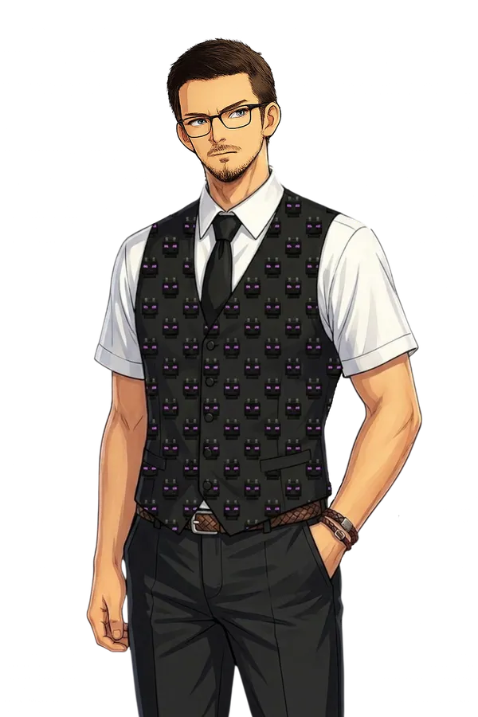
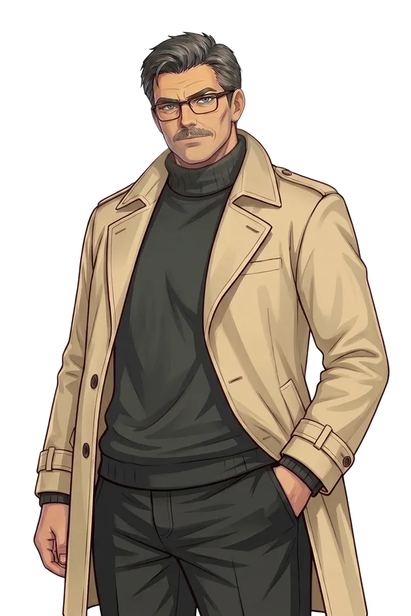
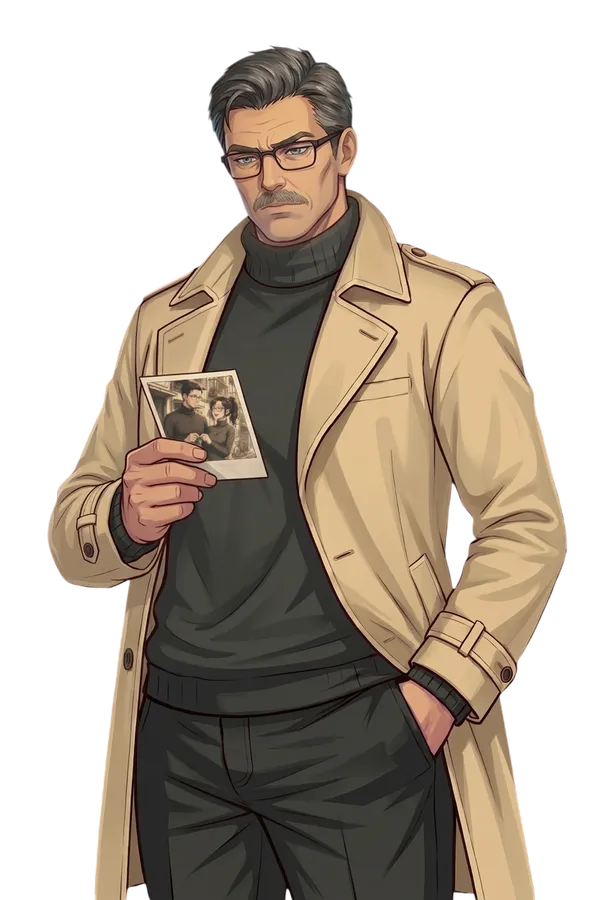
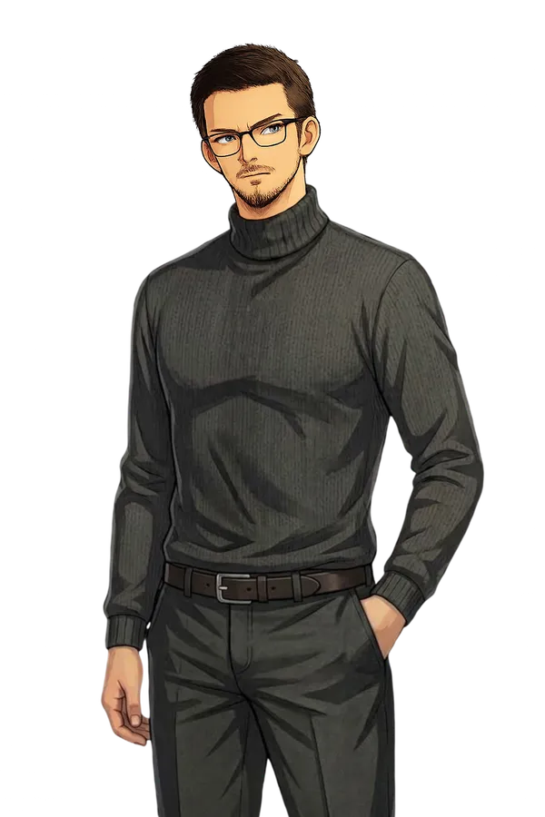

Théo
Théo est un ami d’Allan qui rejoint la bande de Jessy et Ilona. Calme et attentif, il retient les petits détails que les autres laissent passer et propose son aide avant qu’on la lui demande.
Description
Section intitulée « Description »Théo est posé, précis et prévenant. Il remarque où chacun pose ses affaires, ce que chacun préfère, et agit souvent avant qu’on ait fini de formuler une demande.
Avant même de le voir, Jessy et Ilona entendent parler de lui à la cantine. Allan : « Je demanderai à Théo. Il a toujours une réponse. » puis « Un ami. Il parle comme s’il avait déjà lu la fin. »
Il apparaît à l’écran lors de la sortie à la plage. Jessy ne le connaît alors « surtout [que] par les phrases d’Allan : toujours là au bon moment, toujours avec une réponse prête ». Il conseille de s’éloigner des rochers parce que la marée monte, plante le parasol, met le sac d’Ilona à l’ombre et retrouve le porte-clés qu’elle a perdu.
À la rentrée, il fait partie du comité de coordination du festival culturel. Le narrateur insiste sur le fait qu’il aide vraiment : il « ne vole pas l’idée. Il l’ajuste ». Sofiane, lui, met en garde contre « ceux qui creusent » au moment où Théo vient de passer (la cible exacte reste ambiguë dans le texte).
En janvier, il a « les notes les plus complètes du groupe » et connaît des détails très précis sur Ilona, que la narration dit classés « comme les pièces d’un dossier ». Allan le connaît « depuis le collège » et commence à s’en méfier : « Le problème avec Théo, c’est qu’il n’est jamais le problème. »
Le jour de la remise des diplômes, il annonce qu’il part à Tokyo le 6 avril, « dans onze jours », pour un studio qui gère déjà trois chaînes.
Caractéristiques
Section intitulée « Caractéristiques »- Couleur de dialogue : violet clair (
#c8b6ff).
- Entourage : ami d’Allan.
- Au lycée : membre du comité de coordination du festival culturel.
- Tic : il surnomme Monsieur Laplage « le Messi ». Selon Allan, Théo l’avait d’abord appelé « le GOAT des conseils cryptiques », puis a trouvé que « Messi » sonnait mieux.
- Amitié avec Allan : dix ans, Allan ayant passé ce temps à le « traduire » auprès des autres.
- Après le lycée : départ pour Tokyo le 6 avril.
- Route A : travaille à Tokyo dans le studio (trajet de trente-deux minutes) ; son propriétaire l’appelle par un nom différent chaque semaine, dont « Tao ».
- Route B : gère le studio, la régie, les sponsors et le planning de la chaîne d’Ilona ; il parle en chiffres (« Vingt-deux virgule huit. Je l’ai pesée avant de partir. »).
- Fin B1 : accepte un poste de coordination de production au studio, sans appartement.
Apparence et tenues
Section intitulée « Apparence et tenues »Théo a les cheveux bruns courts, des lunettes rectangulaires noires et une barbe courte. Ses sprites déclinent huit expressions : neutre, sourire rassurant, sourire entendu, innocence feinte, déception froide, agacement contenu, frustration défensive et jalousie silencieuse.
- Plage (Arc II) : chemise blanche ouverte sur un t-shirt rayé bleu marine, lunettes de soleil accrochées au col, pantalon beige. Seules les expressions neutre et sourire rassurant sont utilisées.
- Festival (Arc III) : tenue dédiée au festival.
- Hiver (Arc IV) : manteau d’hiver, porté avec une écharpe au marché de Noël. S’il donne son écharpe à Ilona, il passe à la version sans écharpe ; l’Arc V reprend ensuite la variante en vigueur.
- Uniforme (Arcs V et VI) : veste noire à col montant et boutons dorés, chemise blanche, cravate rouge.
- Tokyo : tenue de ville portée à Tokyo.
- Soirée (Fin A2) : tenue de fête.
- Fin A3 : version vieillie aux cheveux grisonnants, puis tenue reprenant celle de Monsieur Laplage.
Le dossier images/personnages/Theo/Theo_laplage/ contient quatre images (dont une « picture ») qu’aucun script n’utilise.
Personnalité
Section intitulée « Personnalité »Théo est serviable, observateur et sûr de lui. Il retient ce qu’on dit en passant et le transforme en geste concret.
Il a tendance à finir les phrases des autres. Aux mares, il le reconnaît lui-même : « Je fais ça trop souvent. Je crois savoir ce que les gens veulent avant qu’ils finissent. »
Il dit des choses justes au moment où elles blessent le plus. Le narrateur parle d’« une vérité utilisée comme une lame » ; Sofiane : « La vérité peut être une main tendue. Ou un poing fermé. Théo sait très bien laquelle il utilise. »
Il distingue « calculer » et « optimiser ». Selon Allan, quand on lui dit non, il ne s’arrête pas et ne s’énerve pas : « Lui, il… optimise. »
Le jeu le présente comme sincère : en lui faisant son offre, « il ne ment pas ». Un commentaire du script précise que sa route doit être « une tentation et pas un piège signalé ».
Citations
Section intitulée « Citations »« Je fais attention. » — à Ilona, après avoir retrouvé son porte-clés (Arc II, stand de kakigōri)
« Avec toi, j’aimerais juste… écouter. » — à Ilona, aux mares (Arc II, si Jessy ne l’a pas suivie)
« Et parce que je crois que certaines personnes écoutent Ilona seulement quand elles ont peur de la perdre. » — à Jessy, dans le couloir du festival (Arc III)
« Je ne force personne à rester. » — à Monsieur Laplage, au marché de Noël (Arc IV)
« Ce n’est pas un secret, Jessy. C’est juste que personne ne regarde. » — à Jessy, à propos du projet de stream d’Ilona (Arc V, sortie de la bibliothèque)
« J’appelle ça lui foutre la paix. C’est le seul truc qu’elle réclame depuis septembre. » — à Allan, au gymnase (Arc VI)
« Je dois entendre ton non. Même si on sort ensemble. » — à Ilona, au restaurant (Route B)
« Je voulais te protéger de tout. Mais je ne t’ai même pas protégée de ma façon de t’aimer. » — Fin B2
Avec Ilona
Section intitulée « Avec Ilona »Théo est attentif à Ilona dès leur première journée ensemble.
À la plage, il pose son sac à l’ombre (« Tu préfères l’ombre, non ? »), retrouve son porte-clés bloc et la fait rougir. Il lui coupe aussi la parole ; Allan le reprend. Aux mares, selon la réaction de Jessy, il s’excuse et dit vouloir « juste… écouter », ou lui explique que Jessy a peur de la perdre « en te laissant exister sans lui ». Le compteur lien_ilona_theo augmente de 2, sauf si Jessy les a suivis.
Au festival, il travaille à côté d’elle au stand et répond parfois à sa place. Après la rumeur, il lui dit qu’« on te met une pression que tu n’as pas demandée » ; elle l’admet, puis lui répond : « là, c’est toi qui es en train de me la remettre dans les mains. » Elle confie à Laplage que la gentillesse de Théo « me repose. Et après je m’en veux ».
Il lui offre un carnet de croquis minuscule, parce qu’elle avait dit une seule fois, à la plage, oublier ses idées quand elle est dehors. Ilona se demande si ce souvenir est un cadeau ou la preuve que quelqu’un « collectionne tes morceaux » (Laplage), puis pose sa limite : « Ce n’est pas parce que quelqu’un connaît mes goûts qu’il sait ce que je veux. » Sous conditions, elle part marcher avec lui après le marché ; il lui donne son écharpe et lui propose « juste… un espace » (voir l’onglet Histoire).
Il lui apporte exactement le thé qu’elle prend « quand elle est à bout », lui porte ses notes quand elle manque deux jours, et propose de « gérer » une partie de sa vie, stream compris, en passant par Jessy pour qu’elle ne se sente pas « infantilisée ». S’il obtient cette gestion, Ilona dit : « Parfois j’ai l’impression qu’il gère ma vie mieux que moi. »
Il lui propose de venir à Tokyo travailler avec un studio. À « Tu me proposes une opportunité, ou tu me demandes de venir avec toi ? », il répond « Les deux » si le ton de l’arc penche vers lui, sinon « Je veux que tu viennes ». Il lui laisse jusqu’au 3 avril.
Ilona reste. Théo part seul ; à Tokyo, il garde la deuxième clé de son appartement dans un tiroir et refuse de lui faire passer un message par Allan : « Si un jour j’ai quelque chose à lui dire, je le dirai moi-même. Sans traducteur. »
Ilona part avec lui. Ils s’installent dans le même appartement, puis sortent ensemble dix jours après l’arrivée. Théo promet d’entendre son non, mais la chaîne prend toute la place jusqu’au soir du million d’abonnés.
Fin A1 : Théo fait partie des six amis qui se retrouvent chaque été, de façon irrégulière.
Fin A2 : depuis Tokyo, il a repris contact avec Ilona et s’est excusé, « sans lui demander de venir ni de répondre tout de suite ». Elle l’invite à la soirée du restaurant.
Fin B1 : il la laisse écrire ses propres mots, la regarde partir sans la retenir et l’accompagne seulement « jusqu’au quai ».
Fin B2 : il découvre trop tard ce qu’il n’a pas écouté.
Fin A3 : Monsieur Laplage lui montre une photo d’eux deux que Théo n’a jamais vécue, venue d’une autre vie.
Avec Jessy
Section intitulée « Avec Jessy »Jessy connaît d’abord Théo par ce qu’en dit Allan.
Jessy remarque tout de suite que Théo retient des détails sur Ilona « sans avoir besoin de demander », et voit Théo réussir là où il échoue (le porte-clés). Si Jessy suit Ilona aux mares, Théo lui lance : « T’as tout gâché, mec. »
Dans le couloir du festival, Théo l’attaque avec une phrase vraie ; quoi que réponde Jessy, il le déteste à cet instant. Au stand, si Jessy fait une blague acide, Théo le recadre : « Si tu veux faire rire, choisis une cible qui peut répondre. »
Le carnet de croquis transforme en objet un souvenir que Jessy avait aussi. Jessy avoue ensuite que c’est devenu pour lui un concours.
« Jessy. Je ne suis pas ton ennemi. » Au café, Théo peut lui demander « Est-ce que tu lui fais confiance ? ». Plus tard, il veut que la proposition de « gérer » vienne de Jessy. Jessy peut accepter, refuser ou lui demander pourquoi il ne s’adresse pas directement à Ilona.
Dans le couloir, Théo lui reproche des faits réels des arcs précédents (voir l’onglet Histoire). Si la réponse de Jessy à Ilona est juste, Théo perd son sourire : « T’as mis un an à dire ça. »
Fin A2 : ils se serrent la main au restaurant, puis s’affrontent dans une battle de danse façon Yakuza 0.
Fin A3 : Jessy reconnaît en lui le nouveau « Messi ». Ils se séparent pour mille ans : « Pour toi, mille ans. Pour nous, quelques secondes. »
Avec Allan
Section intitulée « Avec Allan »Allan est l’ami qui fait entrer Théo dans le groupe.
Allan l’invite à la plage et le recadre calmement quand il coupe Ilona : « Attends. Elle parlait encore. […] Ralentis. »
Allan dit le connaître « depuis le collège » et ne pas toujours savoir ce qu’il veut : « C’est comme quelqu’un qui ne perd jamais. » Il dit l’avoir « traduit » quatre fois ce mois-ci.
Au gymnase, Allan l’aborde pour la première fois sans lui chercher d’excuse : « Dix ans que t’ouvres la bouche, que les gens le prennent mal, et que c’est moi qui traduis derrière. » Théo : « Je t’ai jamais demandé de le faire. »
Trois mois sans se parler, puis un dîner à Tokyo : Théo reconnaît qu’Allan l’a « traduit » pendant dix ans sans qu’il lui demande si ça le fatiguait. Ils prennent une photo floue et Théo promet d’appeler.
Fin B2 : au bar, Allan refuse son « rapport d’activité » et lui conseille : « Demande-lui ce qu’elle veut. Puis accepte que la réponse puisse être non, rien, ou pas avec toi. »
Fin A3 : Théo lui raconte tout ; Allan accepte de construire en mille ans une arche autonome.
Avec Monsieur Laplage
Section intitulée « Avec Monsieur Laplage »Les deux personnages se croisent à plusieurs reprises.
Théo appelle Laplage « le Messi ». Au marché de Noël, Laplage lui dit qu’un souvenir bien placé est « comme une clé » qui peut « verrouiller quelqu’un dedans ». « Je ne force personne à rester. » « Non. Mais tu gardes la clé. » Laplage ne lève pas le pouce.
Dans un parc de Tokyo, Laplage conseille au couple de garder « une place au rien ».
Fin B2 : quarante ans plus tard, Laplage lui remet le porte-clés bloc : « Le prochain, c’est toi. »
Fin A3 : Laplage révèle être Théo lui-même, revenu du futur (« Vous. Avec beaucoup de retard. »). Il lui transmet le porte-clés creeper et le TARDIS : « Réussis là où j’ai échoué. Le prochain, c’est toi. »
Avec Sofiane
Section intitulée « Avec Sofiane »Sofiane se méfie de lui : il met en garde contre « ceux qui creusent » et dit à Jessy que Théo sait très bien s’il utilise la vérité comme une main tendue ou un poing fermé.
Avec Alexandre
Section intitulée « Avec Alexandre »Fin A1 : sur la plage, Théo demande avant d’aider Alexandre à construire, puis réussit avec lui onze échanges de raquettes. Il rappelle Alexandre seul après son anniversaire.
Autres liens
Section intitulée « Autres liens »Fin A3 : Théo réunit Allan, Micka, Sofiane et Florentin (que Laplage lui conseille de recruter) pour le projet TAIKUN, et lance la « bataille de reconquête du berceau de l’humanité ».
Fin A2 : Micka est aussi présent à la soirée du restaurant.
Annonce et parasol. Allan annonce que Théo viendra à la plage. Répondre trop vite à son sujet (« Répondre trop vite à propos de Théo. ») donne influence_theo +1, comme « Regarder surtout ce que fait Théo. » au moment de la serviette (scène).
Le porte-clés. Théo se souvient qu’Ilona l’a sorti près du stand et le retrouve sous la table (scène). Cet objet reviendra jusque dans les fins.
La phrase coupée. Il finit la phrase d’Ilona (« Les rochers, oui. C’est plus simple par la jetée. ») ; Allan le reprend (scène).
Le pivot. Théo propose à Ilona de lui montrer la jetée ; elle demande à Jessy : « Je peux y aller ? » (scène). La réponse est stockée dans arc2_choix_activite_theo. « Dire oui, puis les suivre discrètement. » donne influence_theo +3.
Aux mares (scène) :
- confiance, dix minutes ou pique : Théo s’excuse et confie vouloir « juste… écouter ». Après la pique, il ajoute que Jessy a peur de lui « parce qu’il sait que je te comprends » ; sinon, que Jessy « a de la chance ». Si
autonomie_ilona≥ 12, Ilona décide de rentrer ; - suivre : confrontation, « T’as tout gâché, mec » ;
- partir sans répondre : Théo accompagne Ilona et dit vouloir « Que tu n’aies pas à rassurer quelqu’un chaque fois que tu bouges ».
lien_ilona_theo +2 dans toutes les branches sauf « suivre ».
Coucher de soleil. « Demander ce qui s’est passé avec Théo. » donne influence_theo +2 (scène).
Le chantier. Il propose la « fausse porte importante » pour que la caisse ne bloque pas l’entrée (scène).
La rumeur (scène). Après le choix de Jessy, Théo dit à Ilona qu’on lui met « une pression que tu n’as pas demandée ». Si Jessy a fait une blague ou s’est tu, influence_theo +1 et le souvenir theo_utilise_une_verite est posé. « Défendre Ilona immédiatement. » donne influence_theo +2.
Le stand (scène). Il répond à la place d’Ilona (« La porte inutile est en pause »). « Faire une blague acide pour cacher sa blessure. » donne influence_theo +2.
Le duel du couloir (scène). Théo dit que certaines personnes écoutent Ilona « seulement quand elles ont peur de la perdre ». Le souvenir theo_utilise_une_verite est posé ici sans condition. Si Jessy se tait, Théo ajoute « Alors elle vient chercher des réponses ailleurs », plus « Comme à la plage » s’il l’avait suivie ou avait disparu. « Lui rentrer dedans. » donne influence_theo +2.
La confession d’Ilona (scène). « Demander une réponse sur ses sentiments. » : influence_theo +2 ; « Promettre que Théo ne compte pas. » : influence_theo +1.
Le carnet (scène). La narration du marché varie : si influence_theo ≥ 6, Théo « transforme en geste » ce qu’Ilona regarde ; sinon, si lien_ilona_theo ≥ 2, Ilona lui sourit « différemment ». Il offre le carnet de croquis. Réaction de Jessy stockée dans arc4_reaction_cadeau_theo ; « Faire une remarque acide qui déborde. » donne influence_theo +2.
Le Messi (scène). Échange avec Laplage sur la clé qui « verrouille ». Ensuite, Allan dit que Théo « range ses souvenirs comme des arguments » : en pratique, c’est toujours cette réplique qui s’affiche, car le souvenir theo_utilise_une_verite est déjà posé à l’Arc III.
La limite (scène). « Demander ce que le cadeau de Théo signifie vraiment pour elle. » : influence_theo +3 ; à l’accueil de la limite, « Dire qu’elle a raison mais que Théo joue quand même. » : influence_theo +2.
La sortie du marché (scène). Théo demande à Ilona si elle rentre. Si influence_theo ≥ 10, confiance ≤ 8 et que Jessy a demandé ce que signifiait le carnet, Ilona part marcher avec Théo (arc4_ilona_avec_theo, influence_theo +2).
La marche dans la neige (scène bonus). Toujours : lien_ilona_theo +1, influence_theo +2. Il donne son écharpe, propose « juste… un espace ». Réaction d’Ilona calculée sans menu :
- « accepte » (si
influence_theo≥ 14 etautonomie_ilona≤ 0, ou par défaut) : elle veut streamer « pour de vrai » ; Théo propose de modérer et gérer : « Bien sûr. » — « Deux mots. Une dette qui commence. » Effets :influence_theo +3,lien_ilona_theo +1, souvenirstheo_utilise_une_veriteetilona_veut_streamer_serieusement,arc4_5_theo_proposition = gestion_stream; - « directe » (sinon, si
communication≥ 15 ouilona_peut_finir_ses_phrases≥ 3) : « ou parce que tu veux être celui qui m’aide ? », Théo reste sans réponse (influence_theo −3) ; - « prudente » (sinon, si
autonomie_ilona≥ 15) : elle demande du temps.
Minecraft. Si Ilona construit dehors avec le carnet (carnet_hors_maison) : influence_theo +1.
Le thé (scène). Vérifier le thé ou compenser donnent influence_theo +2.
Le café (scène, version annulation). Théo va porter ses notes à Ilona. Les réponses « inquiet » ou « confronte » au message d’Ilona, et « Elle t’a demandé à toi ? » ou « Tu passes beaucoup de temps avec elle ces derniers temps. » donnent chacune influence_theo +2. Si Jessy a confronté Ilona ou si jalousie ≥ 12, Théo lui demande s’il lui fait confiance. Allan le met ensuite en garde si cette question a eu lieu ou si influence_theo ≥ 10 (et qu’Allan est resté).
Gérer (scène). Théo propose de prendre en charge notes, messages du club, sollicitations… et le stream. Choix stocké dans arc5_theo_proposition :
- accepter partiellement :
influence_theo +2; - laisser Théo gérer :
influence_theo +4, puis un écran inquiétant de Théo s’affiche cinq secondes avec une sirène ; - refuser net :
influence_theo −2; - demander pourquoi il ne propose pas à Ilona :
influence_theo −1.
La gare (scène). « Bien sûr que je te fais confiance. C’est Théo le problème. » : influence_theo +3 et souvenir theo_utilise_une_verite.
Minecraft (scène). Si Théo a été laissé gérer (et sans issue prioritaire), Ilona lui a donné le mot de passe du serveur et il a rangé la maison : fin theo_presence, influence_theo +1.
Le gymnase (scène). Théo annonce à Allan son départ pour Tokyo le 6 avril et défend son offre. Selon le ton de l’arc, il répond à « Elle viendra pas » par « Probablement pas », « Tu es sûr de ça ? » ou « Tu veux parier ? ».
L’offre (scène). Studio, équipe qui gère trois chaînes, modération, planning. Puis il s’en prend à Jessy avec jusqu’à trois reproches choisis par arc6_construit_attaques_theo() :
- plage : suivre, partir sans répondre ou blague jalouse ;
- rumeur : silence ou défense immédiate ;
- stand : blague acide ou demande directe ;
- Noël : si Ilona est partie marcher avec lui après la question sur le carnet ;
- « gérer » : délégation totale ou partielle.
Sans reproche disponible, il parle d’usure ou dit que Jessy « a appris ». Selon la réponse de Jessy (arc6_offre_theo), Théo perd son sourire ou garde « une place vide dans le train ». Date limite : le 3 avril.
Récapitulatif des variables
influence_theopèse ×3 dans la « dette » du verdict de l’Arc VI et dansetat_relation().- Le souvenir
theo_utilise_une_veriteretire 6 points de posture ; posé sans condition à l’Arc III, il s’applique à toutes les parties. lien_ilona_theon’est relu qu’une fois, au marché de Noël.
La décision. Ilona reste. Théo répond « Tu vas regretter » si le ton penche vers lui ou si influence_theo ≥ 8, sinon « Je pensais vraiment que tu viendrais. » Il part seul.
Tokyo (scène). Le soir de la randonnée, il dîne avec Allan : vie réglée, mais « plus silencieux que prévu ». Ce qu’il dit de la conversation du couloir dépend de arc6_offre_theo. Il envoie à une heure du matin la photo d’un « dîner raté ».
Le départ. Ilona part avec lui. Le 28 mars, le studio réserve deux places ; le 6 avril, ils prennent le train ensemble (scène).
Tokyo (route). Il porte la valise, pilote le studio depuis la régie, invite Ilona au restaurant dix jours après l’arrivée et lui demande de sortir avec lui. La chaîne grandit ; les sponsors remplacent peu à peu promenades et dîners. Le 6 décembre, plusieurs rappels lisent ses variables passées (arc4_5_theo_proposition, arc4_ilona_avec_theo, arc5_theo_proposition, arc5_fin_minecraft).
La réponse de Théo (scène). Au dernier choix, le joueur décide à la place de Théo :
- « Annuler les sponsors, écouter Ilona. » → Fin B1 ; Théo avoue : « Mais c’est ma peur. Pas ta consigne. » ;
- « Prioriser les sponsors, la chaîne avant tout. » → Fin B2 ; « C’est toujours après. », répond Ilona.
Fin A1 (page) : venu de Tokyo par la correspondance, il partage la journée à la plage, montre son « dîner raté », oublie une batterie externe chez Allan et la récupère près de deux ans plus tard.
Fin A2 (page) : invité par Ilona après s’être excusé, il dit avoir délégué les plannings, chante Baka Mitai et défie Jessy en danse.
Fin A3 (page) : quarante ans après la catastrophe, il apprend que Monsieur Laplage est sa version future. Il hérite du porte-clés creeper, part neuf cent quatre-vingt-dix-neuf ans dans le futur avec les autres et mène la reconquête.
Fin B1 (page) : il éteint son téléphone, laisse Ilona écrire son annonce (« Ce sont tes mots. »), lui tend le téléphone au lieu de répondre au studio, accepte un poste de coordination et l’accompagne jusqu’au quai sans la retenir.
Fin B2 (page) : il décroche la campagne de six mois, entend Allan lui dire de demander à Ilona ce qu’elle veut, rentre et la découvre sans vie. Quarante ans plus tard, sur la plage : « J’aurais dû t’écouter quand tu étais encore là. »


-
 cold disappointment
cold disappointment - controlled annoyance
-
 defense frustration
defense frustration - feigned innocence
-
 quiet jalousy
quiet jalousy -
 feigned innocence
feigned innocence -

quiet jalousy -
 older neutral
older neutral -
 knowing smirk
knowing smirk - feigned innocence
- neutral laplage
-

neutral -

picture - thumb up laplage
- controlled annoyance
-

quiet jalousy - controlled annoyance
-
 feigned innocence
feigned innocence - quiet jalousy
- controlled annoyance
- quiet jalousy